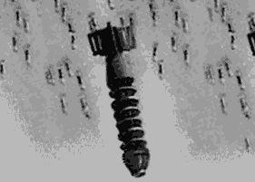

Problem C
Bombs! NO they are Mines!!
Input: standard input
Output: standard output
Time Limit: 4 seconds
It's the year 3002. The robots of "ROBOTS 'R US (R:US)" have taken control over the world. You are one of the few people who remain alive only to act as their guinea pigs. From time to time the robots use you to find if they have been able to become more intelligent. You, being the smart guy, have always been successful in proving to be more intelligent.
Today is your big day. If you can beat the fastest robot in the IRQ2003 land, you'd be free. These robots are intelligent. However, they have not been able to overcome a major deficiency in their physical design -- they can only move in 4 directions: Forward, Backward, Upward and Downward. And they take 1 unit time to travel 1 unit distance. As you have got only one chance, you're planning it thoroughly. The robots have left one of the fastest robot to guard you. You'd need to program another robot which would carry you through the rugged terrain. A crucial part of your plan requires you to find the how much time the guard robot would need to reach your destination. If you can beat him, you're through.
|  |

|
|
Bomb! No they are mines |
Sample input scenario S- source, D- Destination |
We must warn you that the IRQ2003 land is not a pleasant place to roam. The R:US have dropped numerous bombs while they invaded the human land. Most of the bombs have exploded. Still some of the bombs remain acting as land mines. We have managed to get a map that shows the unsafe regions of the IRQ2003 land; unfortunately your guard has a copy of the map, too. We know that at most 40% of the area can be unsafe. If you are to beat your guard, you'd have to find his fastest route long before he finds it.
Input
Input consists of several test cases. Each test begins with two integers R (1 <= R <= 1000), C (1 <= C <= 1000) -- they give you the total number of rows and columns in the grid map of the land. Then follows the grid locations of the bombs. It starts with the number of rows, (0 <= rows <= R) containing bombs. For each of the rows, you'd have one line of input. These lines start with the row number, followed by the number of bombs in that row. Then you'd have the column locations of that many bombs in that row. The test case ends with the starting location (row, column) followed by your destination (row, column). All the points in the region is in the range (0,0) to (R-1, C-1). Input ends with a test case where R=0 and C=0, you must not process this test case.
Output
For each test case, print the time the guard robot would take to go from the starting location to the destination.
Sample
Input Output for Sample Input
10 1090 1 21 1 22 2 2 93 2 1 75 3 3 6 96 4 0 1 2 77 3 0 3 88 2 7 99 3 2 3 40 09 9
0 0 |
18 |
Problem setter: Monirul
Hasan, Member of Elite Problemsetters' Panel
Special Thanks: Shahriar Manzoor,
Member of Elite Problemsetters' Panel